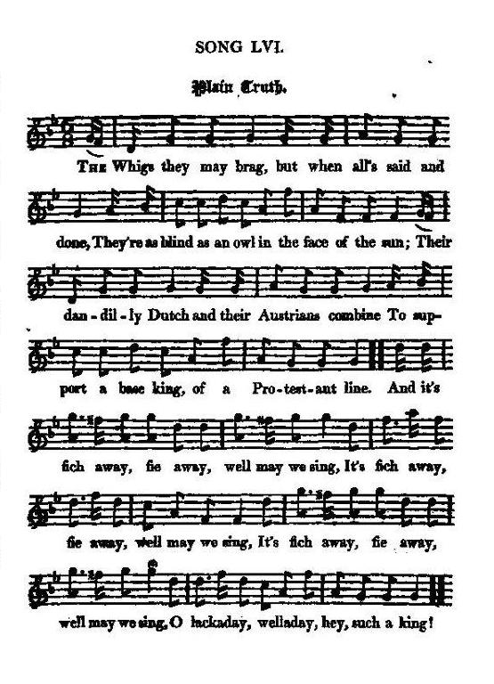

Two Jacobite Songs to the same Tune
1° Plain Truth
1° Rien que la vérité
Hanover and the Great Northern War (1718)
Hanovre et le Guerre du Nord (1718)
from
Hogg's "Jacobite Reliques"
Vol. I, N°56
and
"The True Loyalist"
, 1779, page 142
Tune - Mélodie N°1
"Plain Truth"
(The sound background to this page)
from Hogg's "Jacobite Reliques" Vol. I, N°56
Tune - Mélodie N°2
"A cobbler there was" (as stated in "The True Loyalist")
Tunes sequenced by Christian Souchon

|
"Adieu Dundee"
,
"Bonie Dundee"
and
"Bonny Dundee"
are 3 songs inspired by the tune
"Adew Dundee"
from the Skene MS (c. 1620) and the relating ballad
"Jockey's Escape from Dundee"
(c. 1710).
A variant to the same tune is the vehicle for other Jacobite songs: "There was a Cooper" , "Plain Truth" , "Fuigheall eile" , "Let Misers tremble" . Since c. 1840, Sir Walter Scott's composition "Bonny Dundie" is sung to another melody, that of a children's song "Queen Mary" , more attuned to it. |
|
To the tune
"I do not know anything about the air, or where I first got it. It sounds like an Irish one." (James Hogg in his note to this song in "Jacobite Relics I", 1819 ) The same tune is to be found as the Jig "Charlie's Welcome", in "Harding's All round Collection", N°97, (1905). (Cf. Fuigheall eile ). |
A propos de la mélodie
"Je ne sais rien concernant cette mélodie, pas même quand elle m'a été communiquée pour la première fois. Elle ressemble à un air irlandais" (James Hogg, dans une note pour ce chant dans "Reliques Jacobites vol. I", 1819) On trouve le même air sous forme de gigue intitulée "Bienvenue à Charlie" dans la "All round Collection" de Harding, N°97, publiée en 1905. (Cf. Fuigheall eile ). |

|
PLAIN TRUTH
1. The Whigs they may brag, but when all's said and done, They're as blind as an owl in the face of the sun; Their dandilly Dutch and their Austrians combine [1] To support a base king, of a Protestant line. And it's fich away, fie away, well may we sing, It's fich away, fie away, well may we sing, It's fich away, fie away; well may we sing, O lackaday, welladay, hey, such a king! 2. In debt and in danger, and left in the lurch, No spark of religion, though mad for the church; While a merciless mob, that in ignorance grope, Go straight to the devil for fear of the pope. And it's fich away, &c. 3. From their cursed tenets good witness they bring, Their prince to deny, and to banish their king: 'Twixt their politics false and their principles foul, They'll ruin their country, and damn their own soul. And it's fich away, &c. 4. Our citizens fret, and our countrymen foam;[2] We're half killed abroad, and half murder'd at home. By fatal experience, in time we'll grow wise, And when we're all ruin'd we'll open our eyes. And it's fich away, &c. 5. Religion has prov'd our disgrace and our fall ; We have either too much, or else none o't at all. 'Tis the cant and pretext of these politic fiends, To save their own bacon, and plunder their friends. And it's fich away, &c. Source: "The Jacobite Relics of Scotland, being the Songs, Airs and Legends of the Adherents to the House of Stuart" collected by James Hogg, published in Edinburgh by William Blackwood in 1819. |
PLAIN TRUTH
A SONG - Tune, A Cobbler there was &c. 1. The English may brag, but, when all's said and done, They're blind as an owl in the face of the sun; Dutch, Austrians and Hessians, Sardinians maintain To support a false K[in]g in a Protestant line. Derry down, &c. 2. In debt and in danger, and left in the lurch, No spark of religion, tho' mad for the church; While a merciless mob that in ignorance grope, Will go to the devil for fear of the Pope. Derry down, &c. 3. If taught by religion what text do you bring, To murder a Prince, or to banish a King: 'Twixt your politics false and your principles foul, You'll ruin your land, and you'll damn your poor soul. Derry down, &c. 4. Your citizens fret, and our countrymen foam; You're half-kill'd abroad, and half-murder'd at home. By fatal experience, in time you'll grow wise, And when you're all ruin'd, you'll open your eyes. Derry down, &c. 5. If sects of religion procure not your fall ; It's plain you've too many, or else none at all. Religion is the cant of your politic slaves, To save their own bacon, and plunder yourselves. Derry down, &c. 3 bis. Too late you'll repent, but too soon you will grieve, Neither God, nor His church, nor His saints you believe; Sell coming religion, you are still at a loss Will nothing provoke ye but the sign of the cross? Derry down, &c. 6. You may call this New England instead of the Old, Your slavery's bought, and your liberty's sold Within your own bowels you nourish your curse, Your case is so bad it can never be worse. Derry down, &c. 7. Your trust is defeated, the best journeymen broke, New pensioners hir'd just to settle the yoke, With seven years 'prenticeship under a Turk, New taxes and levies will settle the work. Derry down, &c. 8. Now rise all ye Sons, ye brave souls of Great Britain, Now the Hoggans and the Duke is besh[-]ten; Shake off your oppression like men of good sense; Drive out all the rogues, and call in the brave Pr[in]ce. Derry down, &c. Source: "The True Loyalist; or, Chevalier's Favourite: being a collection of elegant songs, never before printed. Also several other loyal compositions, wrote by eminent hands." Printed in the year 1779. |
RIEN QUE LA VERITE
[CHANT -sur l'air de Il était un savetier ] 1. Qu'ils pérorent, ces gueux de Whigs [d'Anglais] !J'affirme que La chouette en plein soleil est moins aveugle qu'eux. Autrichiens, Hollandais s'allient pour appuyer, [1] Comme il est protestant, un roi dégénéré. [Pour soutenir un roi protestant, des Hessois Sardes et Autrichiens accourent à la fois.] Mais qu'il fiche le camp! Oui, voilà notre chant! (ter) Avoir un tel roi, n'est-ce point affligeant? [Ding, ding, dong...] 2. L'état est endetté. On le sent vaciller Irréligieux, bien que de l'Eglise entiché: On voit, cruel, borné, le peuple tâtonner. Par peur du Pape, il finira par se damner! Mais qu'ils fichent le camp!...[Ding, ding, dong...] 3. De leurs dogmes honteux, ils témoignent le mieux. [Quelques textes toujours leur servent d'appui pour] Renier leur Prince et bannir leur roi: c'est tout eux! Mauvaises décisions, doctrine à l'unisson. Nous courons à la ruine, eux à la damnation! 4. Les citadins s'agitent, les paysans s'excitent. [2] Vaincus à l'étranger, molestés dans leurs [vos] gîtes. Au peuple [A vous] , avec le temps, bien sûr l'esprit viendra: Quand il sera ruiné, notre aveugle verra. Mais qu'ils fichent le camp!...[Ding, ding, dong...] 5. La religion nous a tous ruinés, je crois. Nous en avons trop et pas assez à la fois. En ton nom, religion, s'agitent ces démons Qui, pillant leurs alliés, sauvent leurs provisions. Mais qu'ils fichent le camp!...[Ding, ding, dong...] 3 bis. A repentir tardif, châtiment hâtif, Quand à Dieu, ses saints, son Eglise on est rétif. Votre foi nouvelle à perte vendez-la Conserve-t-elle même le signe de croix? [Ding, ding, dong...] 6. Dans la Nouvelle Albion, comme vous la nommez, Bonjour la servitude, adieu la liberté! Vos entrailles nourrissent votre déclin De pire destin il n'en est point, je le crains. [Ding, ding, dong...] 7. Votre alliance est vaincue, votre champion brisé. Vos nouveaux protégés viendront vous juguler. Ils furent sept ans du Turc les apprentis. Nouveaux impôts et taxes en paieront le prix. [Ding, ding, dong...] 8. Debout, fils courageux de Britannia! Tandis qu' Hogan-Mogan et leur Duc sont au plus bas Secouez l'oppression, écoutez la raison, Chassez-les, rappelez le Prince en sa maison! [Ding, ding, dong...] (Trad. Christian Souchon (c) 2011) |
|
[1]
Dutch, Austrians
: This song seems to allude to the association entered into by King George, the Emperor, and other princes and states of the Continent, against the power of the
King of Sweden
(Charles XII), who had acknowledged King James (1715), and, had he lived (he was killed at Fredrikshald in 1718 ), intended to have invaded Britain, in order to establish him in his rights."
[2] Citizens, countrymen : "It is a middling good song; but whether it is a true or a false character of the nation, and the Whigs in particular, it becomes not me to decide. I put down the sentiments of my friends the Jacobites [Hogg seldom admits to Jacobite sympathy!] as I find them. Their poetry and music I admire in part ; their loyalty always." Hogg in "The Jacobite Relics of Scotland" [3] Your trust is defeated...New Pensioners hired" : If Hogg's assumption is correct, this could refer to the state of affairs toward the end of the "Great Northern War" (1719), after King Charles XII of Sweden, crushingly defeated by the Czar Peter I in the Battle of Poltava (1709) had returned from Turkey and resumed personal control of the war effort to force Denmark into a separate peace treaty and bar Great Britain's access to the Baltic Sea. Britain had concluded alliances with Prussia, Russia and Denmark in 1715. Britain and Prussia negotiated the separated treaties of Stockholm with Sweden in 1719. (Hanover purchased Bremen-Verden from Sweden). [4] Seven years apprenticeship under a Turk : Charles XII who had fled to the Ottoman Empire, remained there for seven years (1709 - 1715). |
[1]
Hollandais, Autrichiens
: "Ce chant semble faire allusion à l'alliance conclue par le roi Georges, l'Empereur d'Autriche et d'autres princes et états du continent contre
le roi de Suède
(Charles XII) qui avait reconnu le roi Jacques (1715) et, s'il n'était tombé à Fredrikshald (1718), voulait envahir la Grande Bretagne pour y rétablir le souverain déchu dans ses droits."
[2] Citadins, paysans : "C'est un chant de qualité moyenne. Quant à savoir s'il trace un portrait fidèle ou déformé de la Nation en général et des Whigs en particulier, il ne m'appartient pas d'en décider. Je me contente de consigner les sentiments de mes amis, les Jacobites [un aveu très rare sous la plume de Hogg!] tels qu'ils les expriment eux-mêmes. Si je ne suis pas un inconditionnel de leur poésie et leur musique, leur loyauté envers le roi exilé fera toujours mon admiration." Hogg dans "Reliques Jacobites d'Ecosse" [3] Votre alliance est vaincue...Vos pensionnés brisés" : Si la supposition de Hogg est exacte, le chant vise la situation à la fin de la "Guerre du Nord" (vers 1719), après que le roi Charles XII de Suède, battu par le Tzar Pierre Ier à Poltava (1709) fut rentré de Turquie et eut repris personnellement la tête des opérations pour contraindre le Danemark a une paix séparée et barrer à la Grande Bretagne la route de la Baltique. L'Angleterre avait conclu des alliances avec la Prusse, la Russie et le Danemark en 1715. La Grande Bretagne et la Prusse négocièrent avec la Suède les traités séparés de Stockholm en 1719, année où Hanovre acheta à la Suède, Brême et Verden. [4] Sept années d'apprentissage chez les Turcs : Charles XII s'était réfugié dans l'Empire ottoman où nil était resté sept ans (1709 - 1715). | |
|
|
||
2° Let Misers tremble o'er their Wealth
2° Que les avares tremblent pour leur or
A Bacchanalian song
From "Jacobite Relics II", Appendix , Jacobite songs N°V, page 406, 1821
|
LET MISERS TREMBLE O'ER THEIR WEALTH
1. Let misers tremble o'er their wealth, And starve amidst their riches, Let statesmen in deceit grow old, And pine with envious wishes. But we whom no vain passion sways, Our mirth from wine arising, Our noble passions will obey, Both knaves and fools despising. 2. Let them lament who have betrayed Their king and bleeding nation: The rich they always are afraid. However high their station. But we will chant, and we will sing, And toast our bonnie lasses: To all we wish, and all we want. We'll circulate our glasses. 3. Fill up once more the sparkling bowl, The brave feel no disaster, No bold informer dare control, Here's a health to our lawful master. Our loyalty we will maintain, And drink a health to true heart; We'll ever honour and obey The royal race of Stuarts. Source: "The Jacobite Relics of Scotland, being the Songs, Airs and Legends of the Adherents to the House of Stuart" collected by James Hogg, published in Edinburgh by William Blackwood in 1819. |
QUE LES AVARES TREMBLENT POUR LEUR OR
1. Les avares peuvent trembler pour leurs trésors Et mourir de faim sur des monceaux de richesses. Et les politiciens ruiner en vains efforts Et lâches fourberies leur âge et leur jeunesse. Nous, nous refusons, ces vaines passions, Nous que le jus de la vigne rend joyeux. Aux nobles passions, nous obéissons, Méprisant les sots et les avaricieux! 2. Ils peuvent bien pleurer les traîtres à leur roi Et à la nation exsangue de surcroît: Les riches on le sait sont remplis d'effroi Ils craignent de perdre leur rang, si haut qu'il soit. Mais nous, nous rions, mais nous, nous chantons Et portons des toasts à nos bonnes amies: Ce que nous souhaitons, ce que nous voulons C'est que circulent nos coupes bien remplies. 3. Viens donc verser encor le breuvage enchanteur! Que les braves ne se fassent pas de soucis: Il n'y a parmi nous point de délateurs! A la santé du maître que le droit prescrit! Notre loyauté ne saurait fléchir: Nous trinquons à qui nous aimons entre tous: Et notre honneur c'est de leur obéir, Aux Stuarts, la race qui doit régner sur nous! (Trad. Christian Souchon(c)2010) |